The Louvre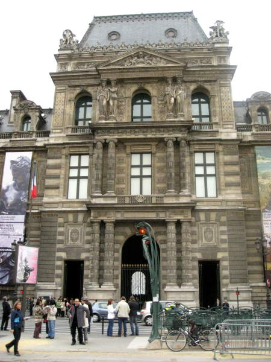
Number two and last of the things I had to see in Paris was the Louvre.
I wasn't sure where to enter the Louvre, but I walked in the
vicinity and saw this building marked "Louvre" with people walking in.
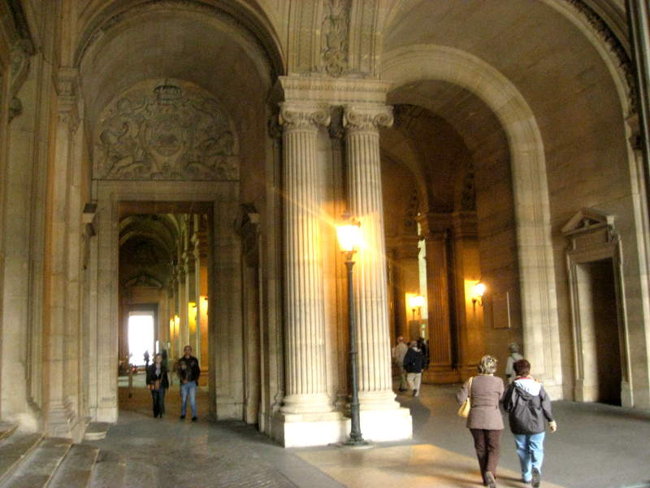
This doesn't seem to be a museum. I saw people waiting on line (queueing) here, but apparently they already had tickets.
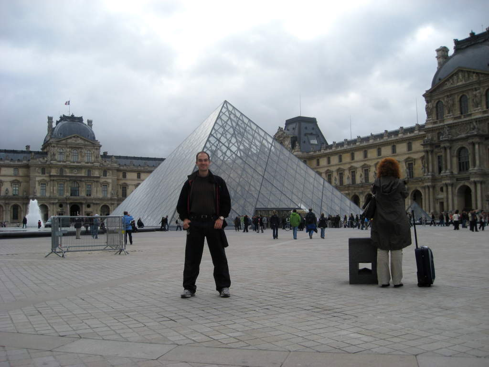
I
kept walking and ended up in this courtyard. This looked like the
Louvre I've seen pictures of and read about in the Da Vinci Code.
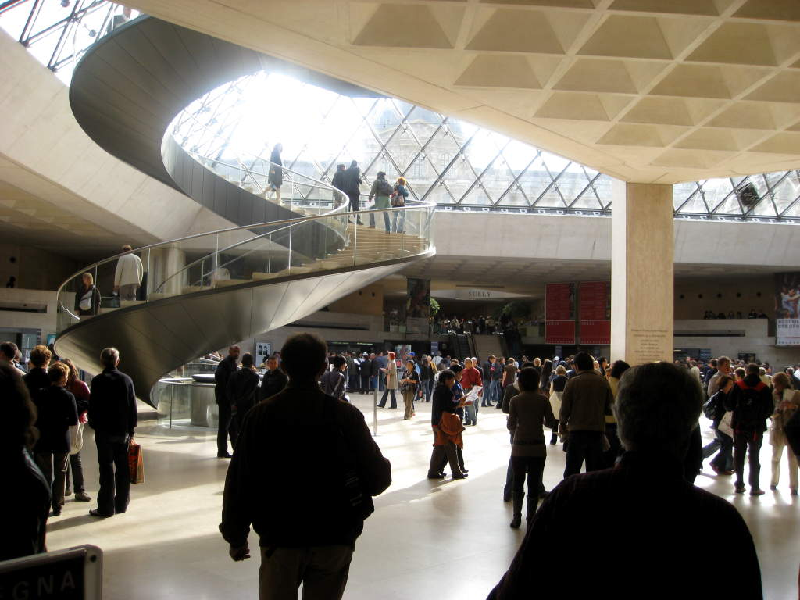
Inside the Louvre was this slick staircase and lots of sunlight, thanks to the glass pyramid above.
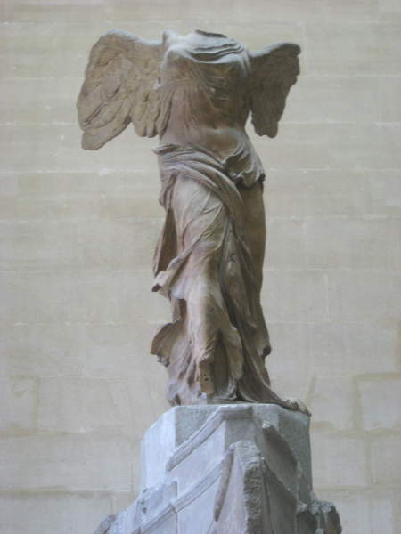
This
is the celebrated "Winged Victory of Samothrace". You may have
seen this before. Apparently one wing is just a plaster copy of
the other. As luck would have it, I took a picture toward the
fake side.
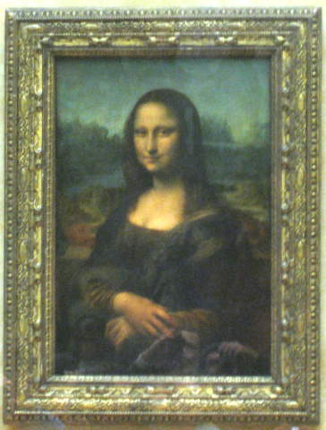
Leonardo
da Vinci exhibited "sfumato" in his Mona Lisa, to obscure whether or
not she is smiling. I took it a step further because it was hard
to get a clearer picture than this.
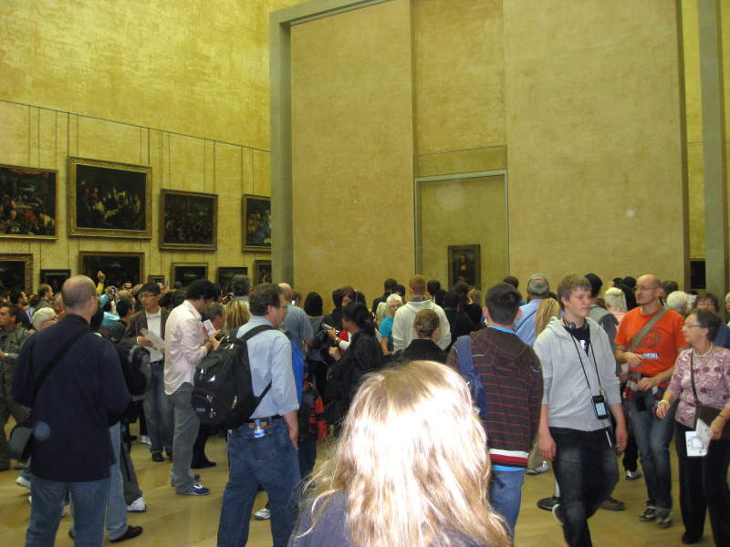
It
honestly wasn't as bad as I feared. I just had to wait half a
minute, then soon I was front and center taking pictures, with the
flash, of the world's most famous painting. I was happy to see
the Mona Lisa protected by polarized glass, but all the other paintings
were not, and people were taking flash photographs of everything in the
museum. There were no signs prohibiting flashes, let alone
photos. I asked the curator about this. She shrugged and
said it was okay.
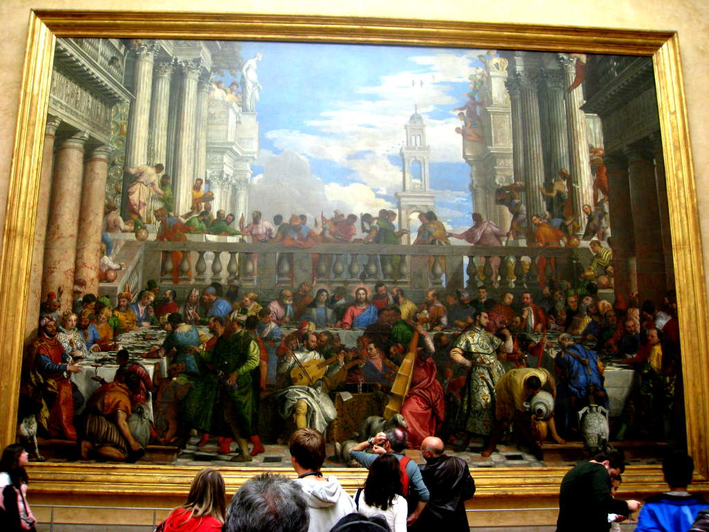
This
painting, "The Wedding at Cana", sits directly opposite from the Mona
Lisa. The fact that this painting is in such stellar condition is
a testament to the art restoration industry. Apparently this
painting has been cut in half and stitched back together. It also
has had water damage from a leaking air vent and has been dropped, with
its metal framework puncturing the canvas in five places, including a 4
foot long tear. I can't see any of that. Apparently this
was looted from Venice. I bet the Italians would have treated
this painting better.
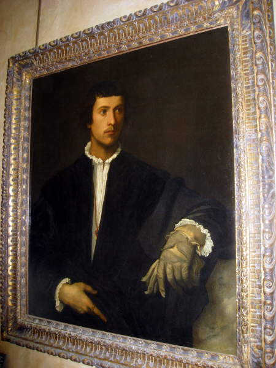
"Man
with a Glove", a portrait by one of my favorite classical artists,
Titian. He knew how to make a portrait look alive, while still
maintaining perfect balance.
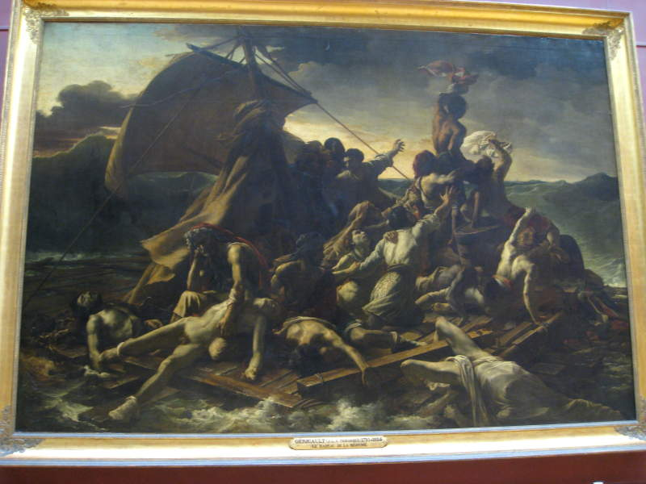
The
"Raft of the Medusa" shows survivors from the Medusa, a French frigate,
right at the moment when they see they're going to be rescued.
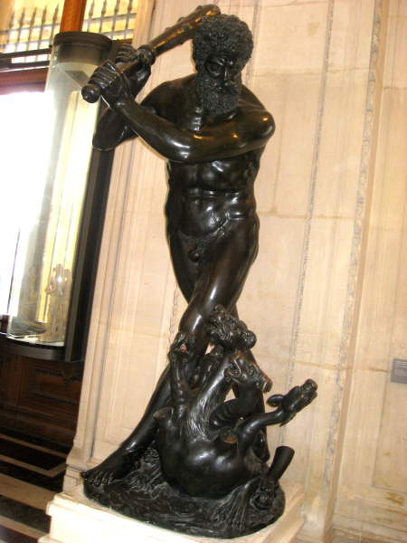
Here's Hercules slugging the heads off of some poor multi-headed dog.
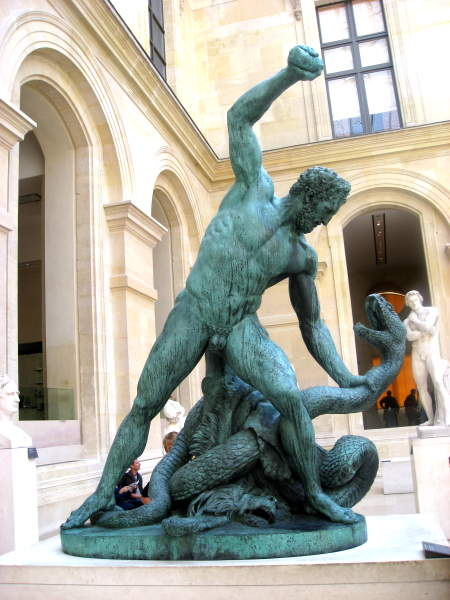
This time Hercules is beating up Achelous, the Greek river god.
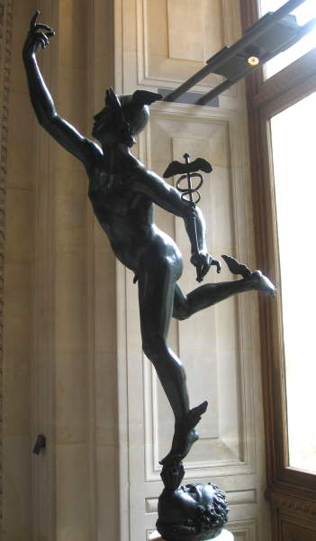
The
statue of Mercury, seemingly in mid-flight. I saw this in Italy
too, I think in the Vatican Museum. Throughout my time in the
Louvre, I couldn't help but compare the two, because both museums
impressed me considerably.
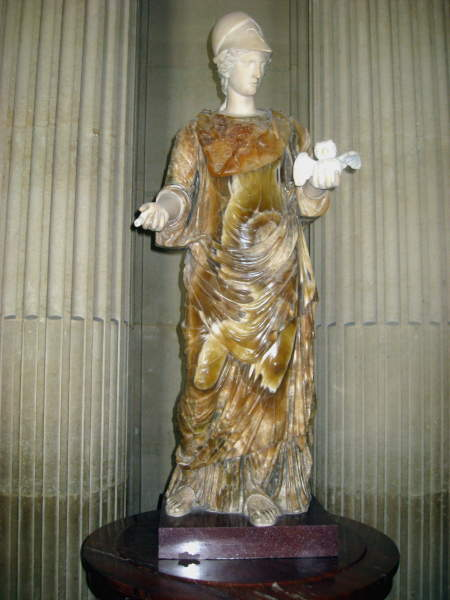
I
liked the dual-material sculptures. The marble clothes looked
cool. I wonder if this was a precursor to the modern Barbie doll.
Extra points for the cute little owl though. I bet Barbie's
jealous.
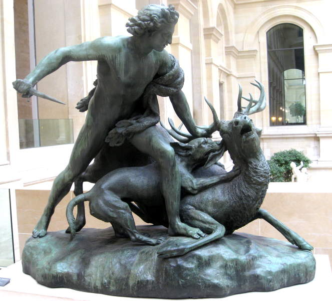
What
a horrible death for this poor elk. I like the dog though.
He's got his little paw on its neck, playing tug-o-war with its
ear. Okay, maybe the elk would beg to differ about the dog.
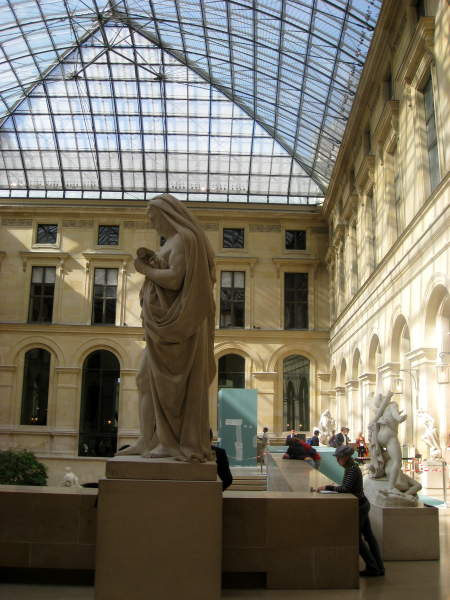
Sculptures sunbathed in this glass-roofed courtyard.
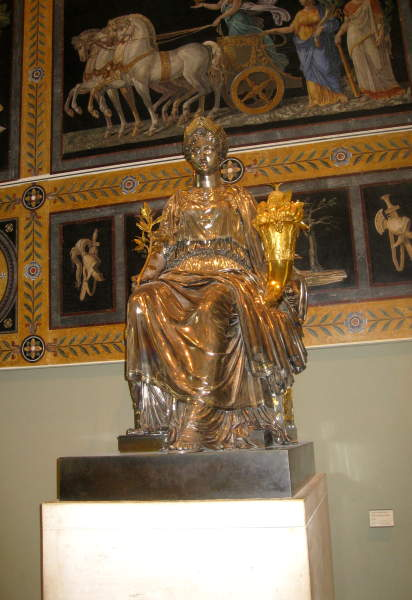
Shiny!
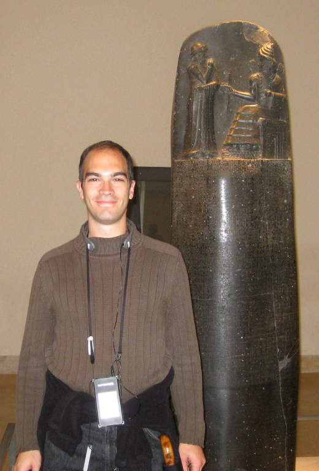
This
is a sculpture of Scott Danzig next to the Code of Hammurabi.
Scott Danzig was born in 1976 in the city of New York. The
audio book hanging around his neck is a recent addition... Blah, you
don't care, do you? King Hammurabi inscribed 282 laws for the
people in ancient Babylon to follow. Hmph.
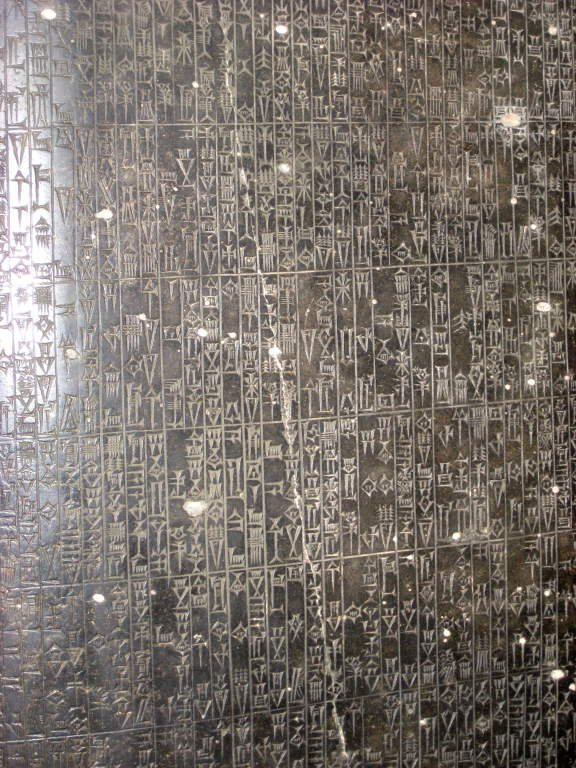
Here's a better look at Akkadian cuneiform.
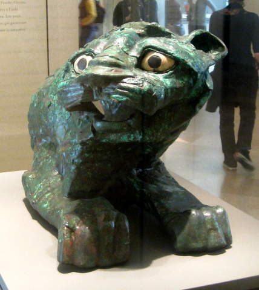
Here's
a really old lion from the start of the second millenium -- BC.
I'm fascinated by ancient Mesopotamia, which includes this cat,
who was found in the "Temple of the Lions" in Mari, Syria. She
used to have teeth, able to snarl ferociously with them. She's
old though, and they don't make dentures her size.
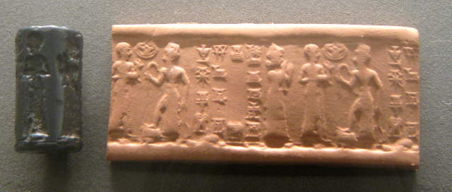
I
zoomed in and took this picture through a magnifying glass they
provided. This was one of many tiny ancient little rollers which
imprints patterns on clay such as here.
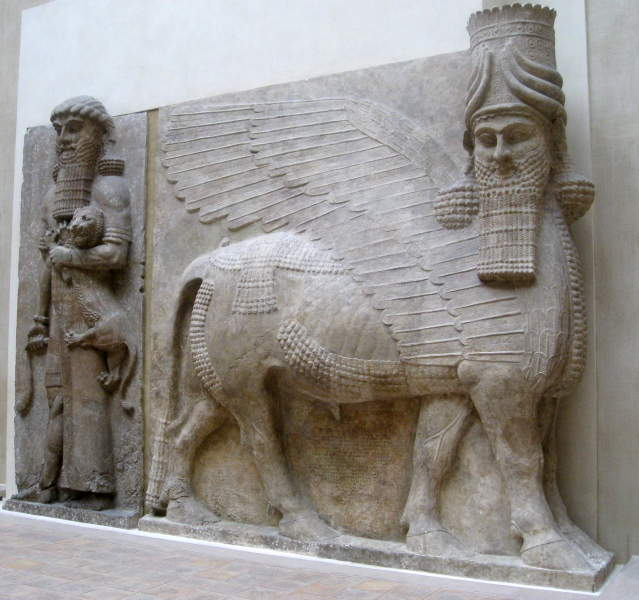
Here's some of the Assyrian sculptures. Assyrians were very violent in general.
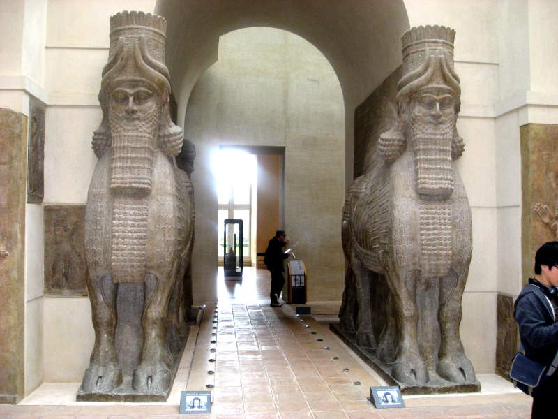
The Assyrians were especially violent if you made fun of their beards.
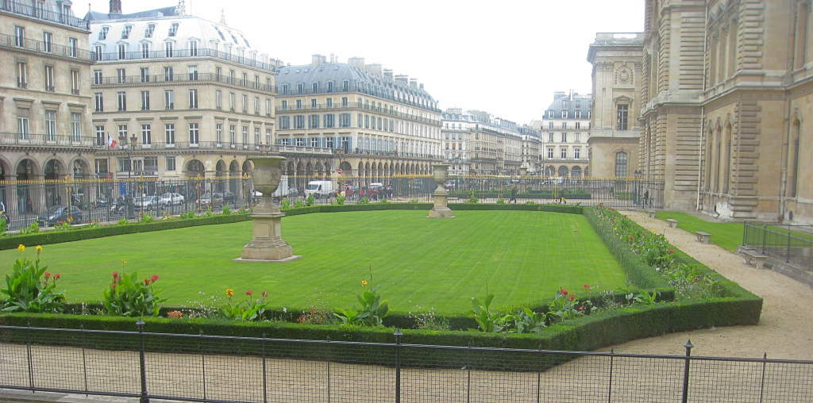
Here's a courtyard outside the Louvre. These hedges were no doubt shaped by the gardeners at Versailles. Nice hedges.
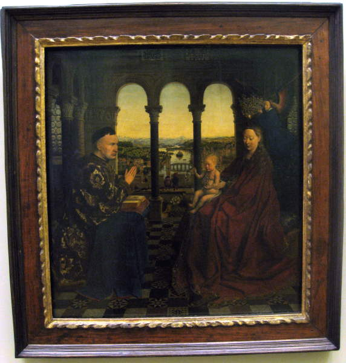
I
read about the "Madonna of Chancellor Rolin" a couple years ago.
In addition to saying I saw the Mona Lisa, I was interested
mainly in two parts of the Louvre, because I knew I'd not have time for
everything. The first was the Mesopotamian artifacts, and second was
the north-European artwork. One famous Dutch artist is Jan van
Eyck. The key here is that baby Jesus and company are made to
look large and important. The world behind them is tiny by
comparison.
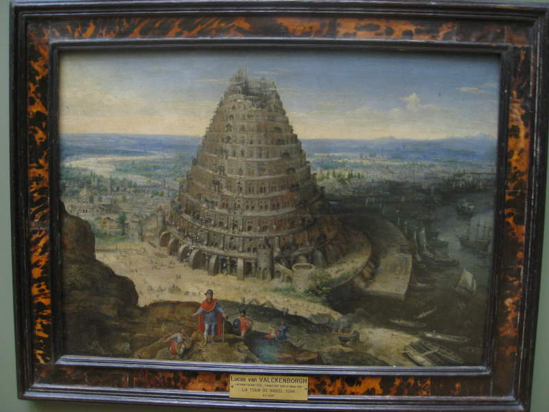
Here's
a fun picture of the Tower of Babel by... Lucas van Valckenborgh?
Looks good. I always imagined the Tower of Babel as more
cylindrical. It doesn't look like they can get too high building
it like a cone.
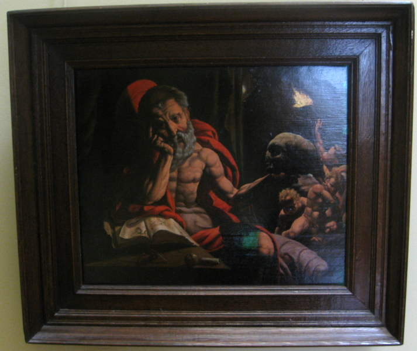
Saint Jerome seems sad.
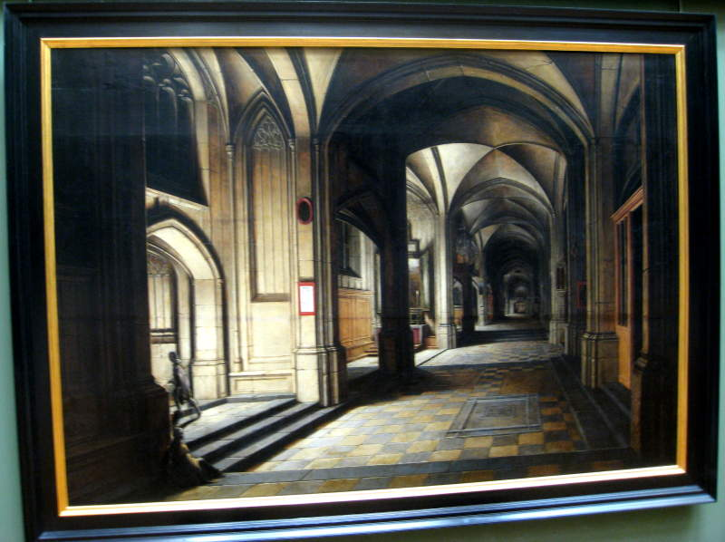
The interior of a church, painted by Hendrick van Steenwyk
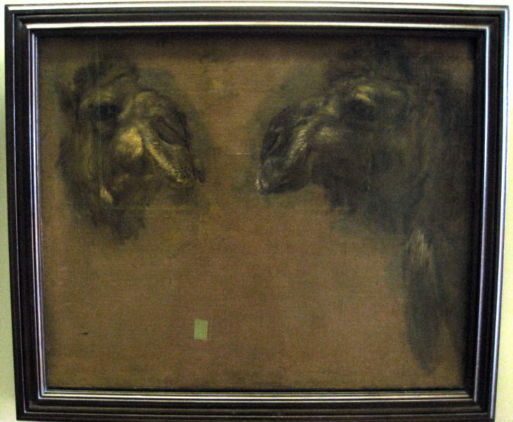
Camels make me happy.
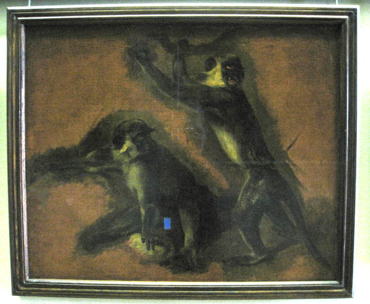
These angry monkeys spoiled my mood though.
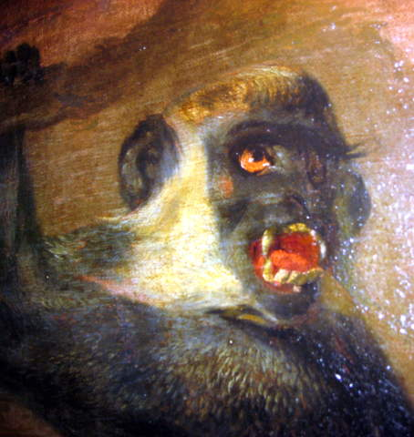
Can you get any more angry-looking? I appreciate how this monkey's primal rage was captured, however.
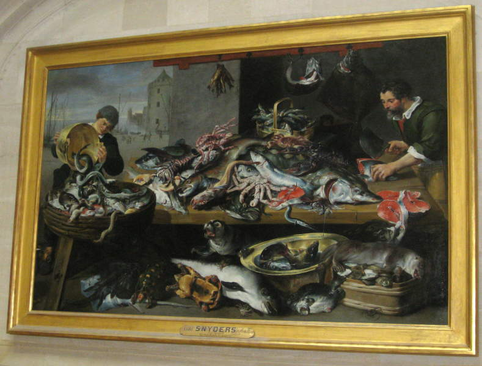
As
I was finishing up my tour of the Louvre, I figured I should eat
something. This painting, "The Fish Market" by Frans Snyders,
killed my appetite.
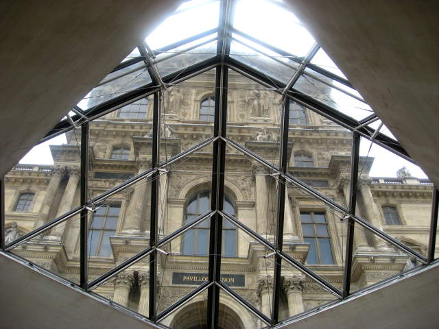
I saw a man pointing his camera upwards. I went over to peek. Ooh! Nice angle!
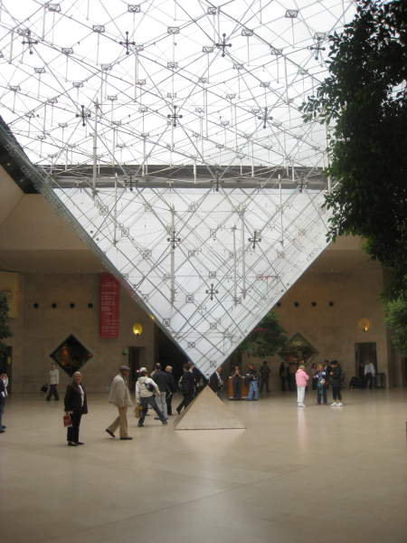
Gratuitous Da Vinci Code shot. If you read the book or watched the movie, you might recognize this.
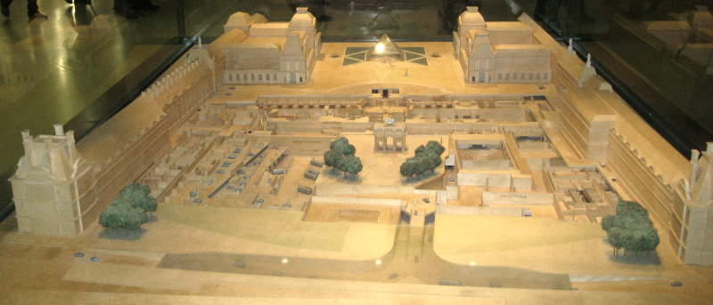
Here's a wooden model of the Louvre that I saw when I was trying to figure out how to get back to the subway.
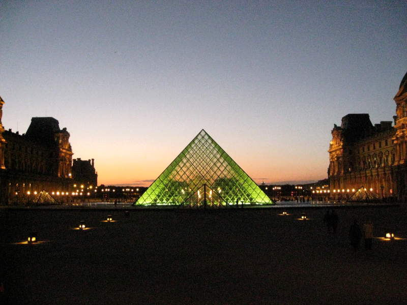
Before
I headed off to the Arch of Triumph, I was treated to this view.
If you catch the pyramid just as it's lighting up, you'll see it
in green. This picture rocks.
Back